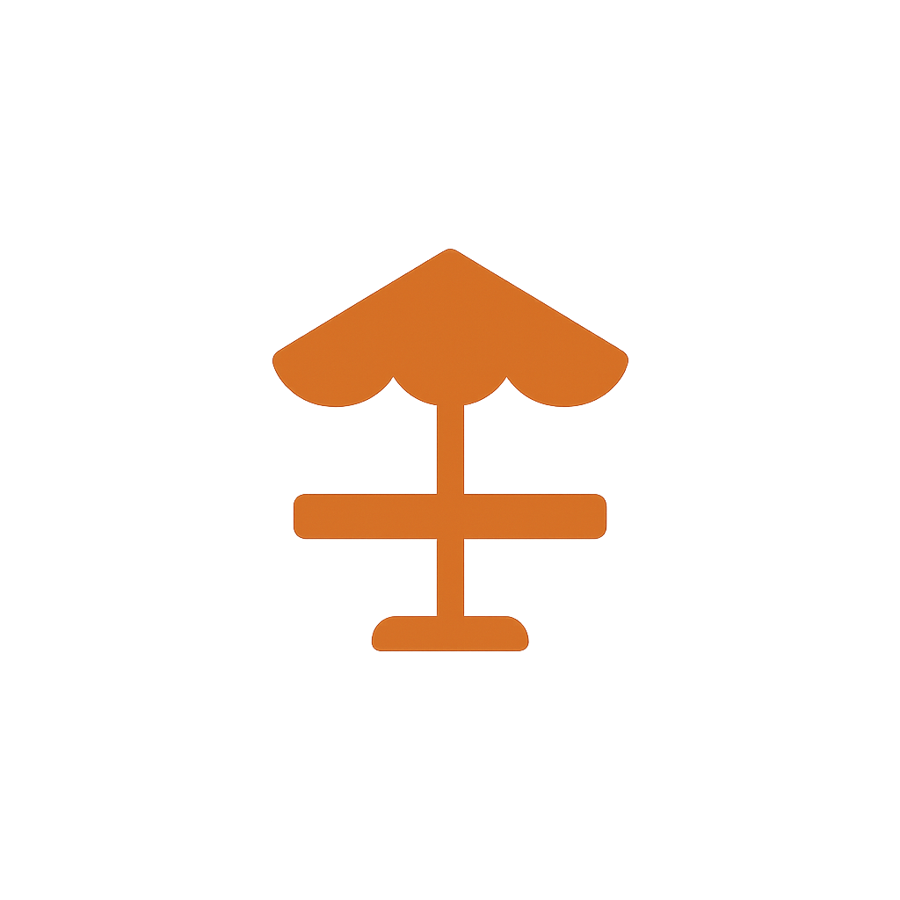
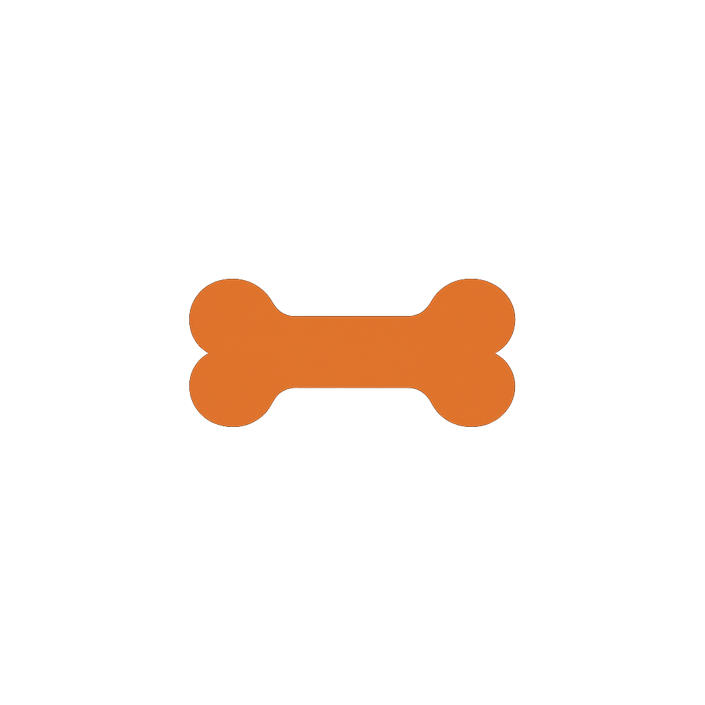
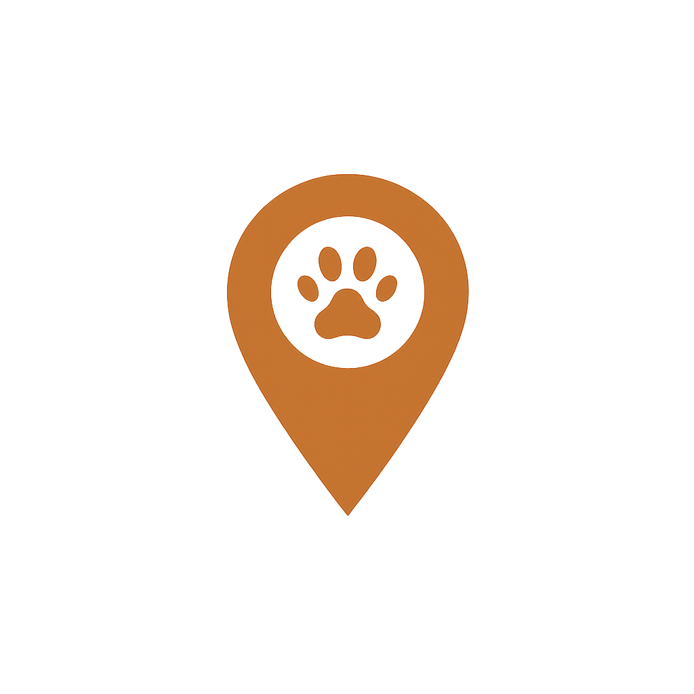

Access Café Haarlem
welcoming for every guest and service dog!
-

Step-free entrance
-
Water bowls
-

Caring staff
-

Central Haarlem
Some guests and their service dogs need a little extra care — and that's exactly what we're here for. At Access Cafe Haarlem, every detail is designed with accessibility and comfort in mind. From our step-free entrance to our calm corners, everyone can enjoy a stress-free visit with plenty of space to relax.